UD7. Programació modular. Funcions en Java
1. Introducció
Si un programa és molt llarg, és a dir, ocupa moltes línies de codi, tendix a complicar-se molt i a ser costón d'entendre.
Per tant, basant-nos en la idea de dividix i venceràs, farem ús de la tècnica coneguda com descomposició modular, amb la qual cosa es descompon el programa (mòdul) en mòduls més xicotets i, per tant, més fàcils d'entendre. Eixe procés també és conegut com disseny descendent o top-down.
graph TD
A[PROGRAMA PRINCIPAL]
A --> B[SUBPROBLEMA A]
A --> C[SUBPROBLEMA B]
B --> B1[SUBPROBLEMA A.1]
B --> B2[SUBPROBLEMA A.2]
C --> C1[SUBPROBLEMA B.1]
C --> C2[SUBPROBLEMA B.2]
C --> C3[SUBPROBLEMA B.3]Això s'aconseguix amb les subrutines. També anomenades subprogrames, funcions o procediments. O bé, mètodes, en el cas de llenguatges orientats a objectes, com Java.
Cal anar fent eixa descomposició successivament. Però fins quan? Hem de parar de descompondre quan un mòdul (o funció, mètode...) faça una feina molt concreta.
Altre avantatge que aconseguim amb les subrutines és no haver de repetir constantment fragments de codi.
2. Tipus de subrutines: procediments i funcions
Una subrutina és un bloc d'instruccions que executa una tasca concreta i a la qual se li dona un nom. Esta subrutina és invocada des d'altra o altres subrutines.
Per emprar una subrutina cal fer:
- Definir la subrutina (nomes 1 vegada).
- Invocar (usar, cridar) eixa subrutina sempre que ho necessitem.
Depenent de si la subrutina ha de retornar un valor o no, serà diferent eixa definició de la subrutina i les invocacions a ella. Per tant, cal distingir 2 tipus de subrutines:
- Procediments: no retornen cap valor
- Funcions: retornen un valor
Podem pensar que una subrutina és com una màquina a la qual se li entren unes dades i fa unes accions determinades segons eixes dades. Si la màquina fa eixir alguna cosa fora d'ella direm que és una funció. Si no, és un procediment.
FUNCIÓ
Una funció podria ser com una màquina de café:
- Entrada: la selecció del tipus de café, quantitat de sucre...
- Accions: preparar el café
- Eixida: el café
PROCEDIMENT
Un procediment podria ser com una màquina de pinball:
- Entrada: les pulsacions dels botons
- Accions: moure la boleta i mostrar punts per pantalla
- Eixida: (res)
2.1. Procediments
2.1.1. Procediments sense paràmetre d'entrada
Els procediments més senzills són els que no tenen paràmetres d'entrada. És a dir: no necessiten cap dada per a fer la seua feina. Per exemple, un procediment que dibuixe una línia de (20) guionets per pantalla:
Exemple de subrutina
2.1.2. Procediments amb paràmetres d'entrada
Però ara pensem que estaria bé poder iniciar cada vegada que posem una línia, quants guionets volem pintar. Per a fer això, caldrà dir-ho en la crida al procediment i, clar està, també a la definició del procediment:
Exemple de subrituna
Els valors que fan d'ellaç entre les 2 rutines que es comuniquen s'anomenen paràmetres:
- Paràmetres actuals: són els que s'envien a la subrituna. Poden ser constants, variables o expressions.
- Paràmetres formals: són els que rep la subrutina (les variables que estan en la definicó de la funció, només poden ser variables).
En qualsevol moment podem eixir d'un procediment amb una sentència return;, encara que és recomanable no posar-lo i eixir en l'última instrucció del procediment.
Més avantatges d'usar subrutines:
- Podem aprofitar un mateix tros de codi per a fer coses amb diferents valors o variables.
- Podem escriure eixe tros de codi sense saber el nom de les variables amb les quals es cridarà a la subrutina.
A l'exemple anterior hem passat un paràmetre al procediment. Per a fer això hem hagut de modificar la crida i definició del procediment. Una subrutina pot tindre tots els paràmetres que necessiten. Pensem per exemple, que també volem donar-li el caràcter amb el qual ha de pintar la línia. Calrien 2 paràmetres:
Exemple de subrutina amb 2 paràmetres
| Java | |
|---|---|
- Crida a la subrutina
Tractarem el "caràcter" com a String i no Char per simplificar el codi.
Com veiem, quan es crida a una subrutina, el valor del 1r paràmetre de la crida es copia en el 1r paràmetre de la definició de la subrutina; el 2n en el 2n...
Resumint el que hem vist de procediment: quan s'invoca un procediment, este fa una tasca determinada, acaba després de l'última sentència (o bé, quan ve una sentència return) i torna a cedir el control a on s'havia fet la crida.
Ara bé: els procediments poden tindre paràmetres d'entrada però no d'eixida. No retornen cap valor. Després vorem que les funcions (a més de poder tindre paràmetres d'entrada) sí que tenen un paràmetre d'eixida: retornaran un valor a qui ha invocat la funció.
Exercici 1. Procediments
Fes un programa anomenat ProvesProcediments. En ell fes els procediments que es detallen i prova'l amb crides des del main.
Fes un procediment anomenat maxim al quan li passes 2 enters com a paràmetres. El procediment haurà de mostrar el màxim dels 2 números.
Exercici 2
Prova el procediment anterior fent crides des del main:
- Mostra el més gran entre el 10 i el 20, fent una crida a "maxim".
- Demana 2 números per teclat i mostra el major usant "maxim".
Exercici 3
Fes els següents procediments sobre figures geomètriques:
3.1. Fes el procediment rectangle, el qual rep 3 paràmetres:
- Un enter indicant la quantitat de files
- Un enter indicant la quantitat de columnes
- Un caràcter
El procediment ha de mostrar un rectangle amb eixe caràcter i amb tantes files i columnes com indiquen els paràmetres. Exemple:
| Java | |
|---|---|
* * * *
* * * *
* * * *
3.2. Fes un altre procediment que es diga també rectangle però que només li passes la quantitat de files i de columnes. El procediment ha de pintar un rectangle d'eixes files i columnes però sempre amb el caràcter "X" (Pots passar-lo com a String, si és més fàcil). Nota: dins d'eixa funció només hi haurà una única instrucció (usa la funció anterior).
3.3. Fes un altre procediment anomenat quadrat, que rep només dos paràmetres: la longitud d'un costat i el caràcter amb el qual s'ha de pintar el quadrat. Nota: dins de la funció només hi haurà 1 única instrucció.
Exercici 4
Fes el procediment de nom titol, al qual li passes com a paràmetre una cadena de text (String) i ha de mostrar eixa cadena envoltada d'asteriscos. Per exemple:
| Java | |
|---|---|
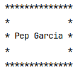
Exercici 5
Procediment taulaMultiplicar al qual li passes un número de taula i et mostra la taula corresponent. El procediment també rebrà un caràcter, que serà una C o una D. Si és una D, mostrarà la taula decreixent. Per exemple, si li passem 22, D:
Exercici 6
Procediment repetirNumeros tal que, a partir d'un número n, mostre:
2.2. Funcions
Hem vist que un procediment podia tindre 0, 1 o molts paràmetres d'entrada. Les funcions també però, a més, també poden tindre 1 paràmetre de sortida. És a dir: les funcions poden calcular un valor i retornar-lo a qui invoca la funció.
Exemple de funció
Imagina que necessitem demanar per teclat un número enter entre un rang determinat de valors possibles, i que mentre no es tecletge un valor correcte, caldrà tornar-lo a demanar. Això es pot fer amb un bucle. Però si al llarg del programa necessitem demanar diversos números entre un rang, hauríem de copiar eixe bucle moltes vegades. Solució: fem un a subrutina (una funció) que retorne un enter correcte cada vegada que invoquem la funció:
| Java | |
|---|---|
- int enterCorrecte --> el paràmetre de sortida serà un int
- Podiem haver fet ús de funcionsIO, però per recordar com es feia sense fitxer de funcions...
- Moment on es retorne el valor (el paràmetre de sortida). Pot ser una constant, una variable o una expressió. En una funció pot haver més d'una sentència return.
És a dir: les funcions sí que retornen un valor, mitjançant la instrucció return. I el tipus de la informació que es retorna s'especifica en la declaració de la funció (en les procediments es posa void, ja que no retorna res).
IMPORTANT!
Les crides a les funcions (a diferència de les crides a procediments) han d'estar dins d'alguna expressió, ja que arrepleguen un valor. Han d'estar en una assignació de variable, en una condició, com a paràmetre d'altra funció (println...), etc.
- La crida a la funció està en una instrucció d'assignació.
- La crida a la funció està en una condició switch.
- La crida a la funció està en una expressió de concatencació de cadenes com a paràmetre de la funció println.
- Compte! Esta crida a la funció no està dins de cap expressió. Eixa crida no donarà error però no té sentit, ja que el valor retornat per la funció no és utilitzat en cap lloc (no estem guardant-lo en una variable ni estem usant-lo en cap expressió).
Notes:
- Dins la definició d'una subrutina poden haver crides a altres subrutines.
- En els paràmetres d'una subrutina poden haver crides a altres subrutines.
Altre exemple
3. El control de flux
Per si encara no ha quedat clar, anem a vore amb un exemple els passos que seguix el flux de control del programa quan hi ha crides a subrutines. Ho vorem amb un algorisme (no és de Java) ja que és igual per a qualsevol llenguatge de programació.
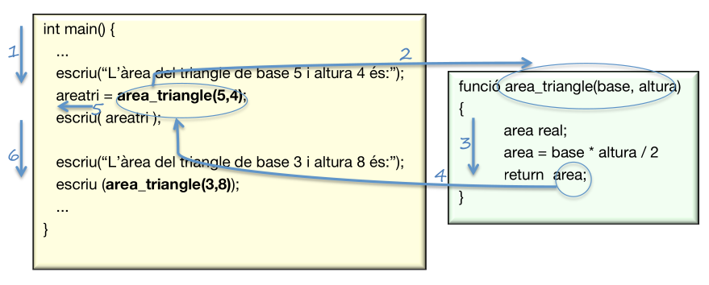
- S'executen les instruccions fins arribar a una crida a una funció (o procediment).
- Es copien els paràmetres actuals de la crida als corresponents paràmetres formals de la definició de la funció (el 2 es copia en la variable base i el 4 en la variable altura).
- Continua el flux de control per dins de la funció.
- Quan arriba la sentència return, es torna un valor a on s'ha fet la crida. En este cas es retorna el valor de la variable area. Com que eixa variable tenia el valor de 10, és com si ara tinguérem en el main la següent assignació: areatri = 10;
- Continua el flux de control per on s'havia quedat el main. És a dir, ara que ja se sap que el valor de area_triangle(5, 4) té el valor de 10, es fa l'assignació d'eixe 10 a la variable areatri.
- Continuen executant-se les instruccions del main fins una altra crida a altra funció (o a la mateixa).
Exercici 7. Funcions
Fes un programa anomenat ProvesFuncions. En ell fes les funcions que es demanen i prova-les amb crides des del main.
- Funció booleana esBixest que li passes com a paràmetre un any i retorna si és bixest o no. La funció no ha de demanar res per teclat ni mostrar res per pantalla. Un any és bixest només si complix alguna d'estes 2 condicions:
- és múltiple de 4 i no de 100 (per exemple, el 2008)
- és múltiple de 400 (per exemple, el 2000) Observem que, per exemple, l'any 1900 no és bixest.
Exercici 8
Funció dataLletra que li passes una data amb 3 enters (19,2,2009) i que retorne la data amb el format "19 de febrer de 2009". Utilitza un switch. Si és un mes incorrecte, que retorne directament "error". Després, des del main, crida a la funció amb la data que cregues convenient. Si és correcta, la mostres. Si no, mostra el text "Data incorrecta".
Exercici 9
Fes les següents funcions, que et serviran per a usar-les en altres Exercicis. Passa com a paràmetre a cadascuna el text que es mostrarà en pantalla:
- La funció llegirString que llija una cadena de teclat i la retorne.
- Fes la funció llegirChar que llija un caràcter de teclat i el retorne.
- Fes la funció llegirInt que llija un int de teclat i el retorne.
- Fes la funció llegirFloat que llija un float de teclat i el retorne.
NOTA: Aquestes funcions ja estan fetes en funcionsIO, però fes-les de nou, en un fitxer nou i fes l'entrada de dades amb la classe Scanner
Exercici 10
Funció esTriangle que, a partir de 3 dades, retorne un booleà dient si eixes dades es poden correspondre amb les longituds d'un triangle o no. Nota: formaran triangle si cada costat és menor que la suma dels altres dos.
Exercici 11
Funció tipusTriangle que, a partir de les longituds dels costats, retorne el tipus de triangle: equilàter, isòsceles o escalé. O bé, "error" si les dades no es corresponen amb un triangle (utilitza la funció esTriangle).
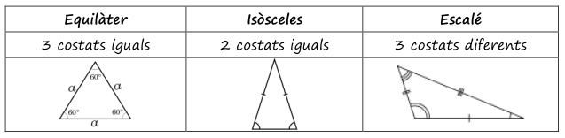
Exercici 12
Funció factorial que, a partir d'un enter, retorne el factorial. Sabent que:
-
0! = 1
-
n! = 1 * 2 * ... * (n-1) * n
Exercici 13
Funció booleana numeroPrimer que diga si el número passat és primer o no (és a dir, si és divisible només per ell mateix i per 1).
Exercici 14
Funció booleana numeroPerfecte que diga si el número passat és perfecte o no. És a dir, si és igual a la suma dels seus divisors excepte ell. Per exemple, el 6 és perfecte perquè: - 6 = 1 + 2 + 3 (1, 2 i 3 són els divisors de 6, llevat del 6).
Exercici 15
Funció sumaPotencies que, a partir d'un número n, retorne un enter que serà el resultat de fer este càlcul: - 1¹ + 2² + 3³ + ... + n^n
4. Classificació dels mòduls
Hi ha distints tipus de mòduls. Anem a classificar-los atenent a distints criteris.
Segons el valor de retorn
- Funcions: retornen un valor al mòdul que l'ha invocat. El valor ha de ser arreplegat per una expressió. Per exemple, si la funció maxim() retorna el màxima de 2 números, la crida a eixa funció la trobarem a una expressió com per exemple k = maxim(i,j).
- Procediments: el mòdul no retorna cap valor, simplement fa una determinada feina i punt.
Segons el moment en què ha estat desenvolupat
- De llibreria: implementades prèviament i guardades als fitxers de llibreria (els fitxers .h de C), com per exemple printf, strlen, scanf, o directament les llibreries de classe de Java.
- De programa: la funció s'ha desenvolupat mentre féiem el programa.
Segons la quantitat de mòduls que el criden
- Subprograma: només l'invocarà un mòdul (normalment serà main).
- Rutina o subrutina: poden ser invocats per qualsevol mòdul.
Segons la situació respecte al mòdul que l'invoca
- Intern: quan està al mateix fitxer que el mòdul que invoca.
- Extern: quan està en un fitxer distint que el mòdul que invoca.
A partir d'això podem trobar altres avantatges de la descomposició modular:
- Reduix el temps de desenvolupament, usant mòduls ja implementats.
- Diversos programadors poden col·laborar en la resolució d'un problema.
- Millora la depuració, ja que podem anar corregint mòduls individualment.
- Facilita modificacions posteriors ja que els programes són més fàcils de llegir.
5. Variables globals i locals
Hi ha diferents tipus de variables depenent d'on es definisquen.
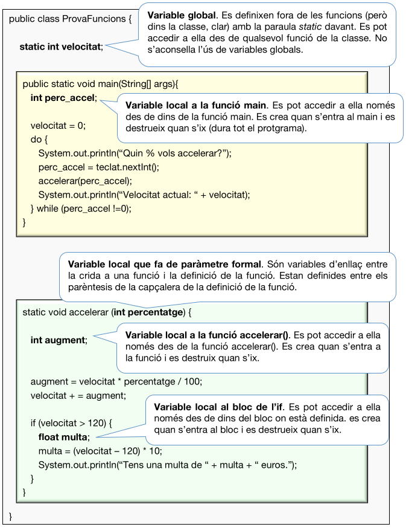
6. Comunicació entre les funcions
Quan una funció A invoca a una altra B, hi ha un possible intercanvi de dades. En este apartat vorem les formes en què es poden passar eixa informació.
6.1. Formes de comunicació
Variables globals

Potser siga la forma més senzilla però es desaconsella el seu ús ja que:
- Les funcions que invoquen B han de saber el nom de les variables globals que usa B, etc.
- Les variables poden ser modificades en qualsevol lloc no desitjat i interessa restringir eixe accés.
Pas de paràmetres per valor
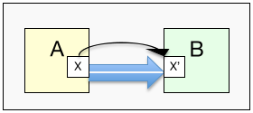
El paràmetre actual (X) es copia en el paràmetre formal (X') però si B modifica el valor de X', el valor de X no es vorà alterat.
X pot ser una constant, variable atòmica (no vector ni objecte) o una expressió. X' ha de ser una variable atòmica.
Valor retornat
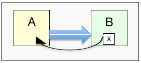
B podrà passar un valor X a A mitjançant la instrucció return X.
A haurà de tindre la crida a B dins d'alguna expressió per a usar el valor retornat per B.
X pot ser una constant, variable (atòmica, array o objecte) o una expressió.
Pas de paràmetres per referència
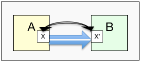
El paràmetre actual (X) "es copia" en el paràmetre formal (X') i, a més, si B modifica el valor de X', el valor de X també es vorà alterat.
X i X' han de ser arrays (vectors o matrius) o objcetes. Ja vorem què son els objectes però per exemple, un ArrayList o un HashMap són objectes.
De les 4 formes de comunicació anteriors només no hem vist el pas de paràmetres per referència. Anem a vore-ho mitjançant un vector com a paràmetre. També vorem com retornar un vector. De forma anàloga, en compte de vectors podríem passar matrius (o altres objectes, que ja vorem més endavant).
6.2. Com passar un vector com a paràmetre
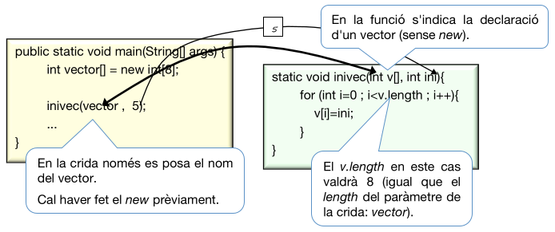
En la funció main, abans de cridar a inivec, la variable vector tindrà zeros als seus elements. I després de cridar a la funció, eixa variable estarà tota a cincs.
Això és degut a que els arrays no es passen per valor (no es passa una còpia del valor) sinó per referència: realment es passa com a paràmetre l'adreça en memòria (la "referència") del vector. Per això, vector i v apuntaran a la mateixa adreça de memòria i, si els components de v es modifiquen, també es modificaran els de vector, como podem vore ací:
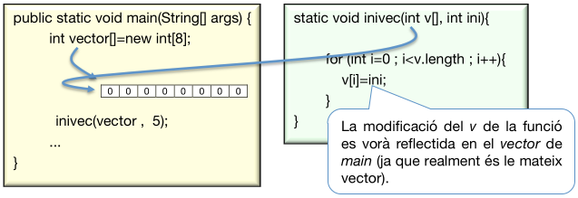
Compte! Si en la funció reservem memòria per al vector del paràmetre formal. NO podrem accedir a eixa informació en el paràmetre actual (el de la crida):
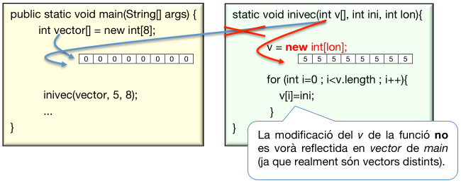
6.3. Com fer que una funció retorne un vector
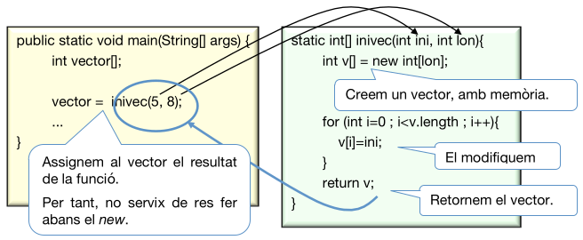
Veiem que ara és la funció qui reserva memòria per al vector v. Després de cridar a la funció, la variable vector apuntarà a eixa zona de memòria:
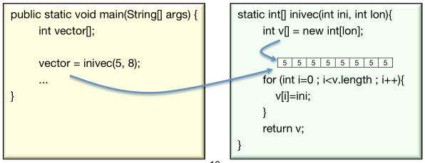
Exercici 16. Procediments i funcions amb vectors
Fes el procediment mostrarVectorInt, que imprimisca un vector d'enters passat com a paràmetre. Cal mostrar els elements separats per comes i amb salt de línia final.
Exercici 17
Procediment mostrarMatriuInt, que imprimisca una matriu d'enters passada com a paràmetre. Cal mostrar-la en forma de matriu on, en cada fila, els elements han d'estar separats per comes. Pots ajudar-te del procediment mostrarVectorInt.
Exercici 18
Procediment copiarVector. Rebrà 2 vectors com a paràmetres i ha de copiar el primer vector al segon. Si el vector origen té mes elements que el vector destí, es copiaran els elements que càpiguen. Feu-ho sense utilitzar System.arraycopy.
Exercici 19
Funció igualsVectors. Rebrà 2 vectors. La funció ha de retornar un booleà dient si els 2 vectors són iguals (igual grandària i mateixos elements). Feu-ho sense utilitzar Array.equals.
Exercici 20
Fes un procediment que llija un vector d'enters. La crida serà llegirVectorInt(vector). És a dir, li passem com a argument un vector (que ja té memòria reservada) i la funció l'ha d'omplir amb enters llegits per teclat. Ajuda't de la funció llegirInt que has fet anteriorment.
Exercici 21
Funció perfectes4 que retorne en un vector els primers 4 números perfectes. Ajuda't de la funció numeroPerfecte que ja has fet.
Exercici 22
Fes un procediment grafic que li passes un vector d'enters possitius i mostre la gràfica. Per exemple, si el vector és [2][7][4][1], ha de mostrar la gràfica:
0 ==
1 =======
2 ====
3 =
7. Els paràmetres de main
Fins ara hem parlat de paràmetres de les funcions en general, però no hem parlat dels paràmetres de la funció main.
En Java, la funció main només té un paràmetre formal: un vector de Strings:
public static void main (String args[])
Però... per a què serveix?
Des de consola, en la línia de comandaments, l'usuari llança el programa amb l'ordre java i el nom del fitxer java (sense extensió .java). Així:
java nomPrograma
Però també podem passar-li al programa uns paràmetres (arguments). Per exemple, si tenim un programa anomenat HolaPersona.java i volem executar-lo passant-li com a paràmetres un nom, un cognom i una edat, ho farem així:
java HolaPersona Pep Garcia 33
Eixa ordre farà que s'execute la funció main() de HolaPersona.java, de forma que cadascun dels arguments es copiaran en una posició del vector de Strings args (encara que es podria dir d'una altra fomra, en compte d'args). És a dir, quan s'execute el main, com li hem passat 3 arguments, el vector args tindrà 3 posicions.
Si volem fer eixe programa, editem el fitxer HolaPersona.java, escrivim açò i el guardem:
| Java | |
|---|---|
El compilem:
javac HolaPersona.java
L'executem amb els arguments:
java HolaPersona Pep Garcia 33
Comprovem que per pantalla apareix:
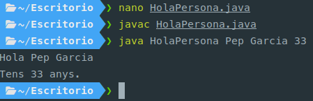
Si executem HolaPersona sense paràmetres, el programa donarà error d'execució (ArrayIndexOutOfBoundsException), ja que intentarà accedir a args[0] però com no li hem passat cap argument, el vector args no tindrà reservada cap memòria.
Si no volem executar l'aplicació de de consola, sinó des de intelliJ, i volem passar-li paràmetres al main, li'ls hem de posar així:
- Botó dret del ratolí sobre el nom de la aplicació o a sobre del mètode main.
- Seleccionar More Run/Debug
- Opció Modify Run Configuration...
- Escriure els arguments en l'apartat Program arguments: Pep Garcia 33
- Acceptar els canvis i executar l'aplicació (no cal tornar a compilar-la).
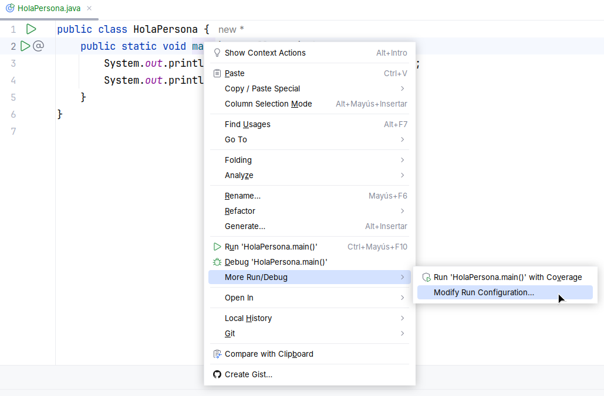
En main, amb args.length podem saber quants paràmetres ens passen cada vegada.
Exercici 23 RESOLT. Paràmetres del main
Programa que mostre per pantalla els arguments passats com a paràmetres al programa (és a dir, a main).
8. Arguments variables
Podem cridar una funció amb distinta quantitat d'arguments. Tenim 3 solucions:
8.1. Sobrecàrrega de funcions
Podem tindre diverses funcions amb el mateix nom però distinta quantitat de paràmetres o de tipus diferents.
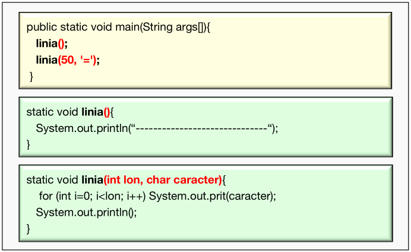
8.2. Passar un vector d'arguments
Realment és un únic argument, però com és un vector, podem posar tots els valors que volem.
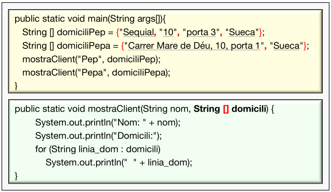
8.3. Ús de varargs
Amb els "..." en l'últim paràmetre d'una funció podrem arreplegar distinta quantitat de paràmetres (com si fora un vector).
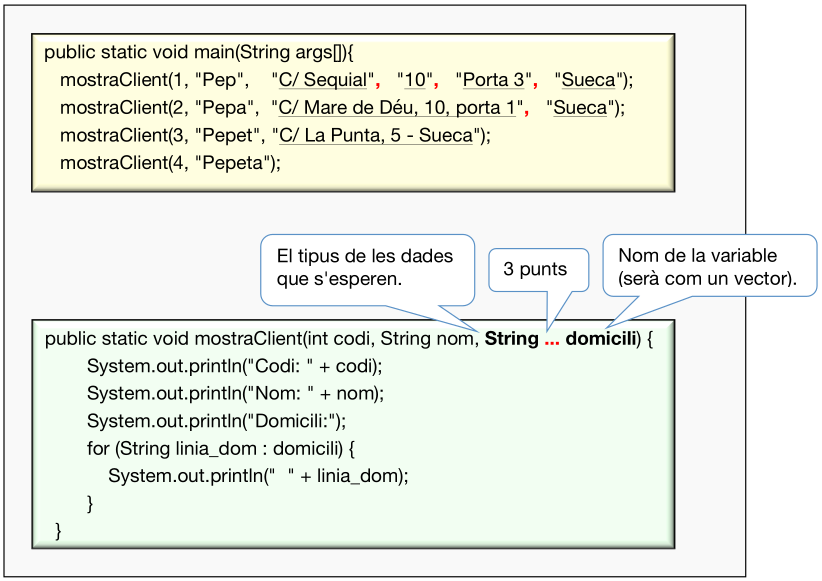
Exercici 24. Procediments i funcions amb vectors
Volem una funció que calcule el màxim de distinta quantitat de números enters.
- Sobrecàrrega: Fes una funció maxim que retorne el màxim de 2 enters passats com a paràmetre. Fes-ne una altra que es diga igual però que accepte 3 enters. Usa-la des del main per comprovar el resultat.
- Vector d'arguments: Fes una funció maxim que li passes un vector d'enters i que retorne el major. Fes crides des del main.
- Varargs: Fes una funció que accepte qualsevol quantitat d'enters com a paràmetre i ha de tornar el major. No es podrà dir maxim, ja que entraria en conflicte amb la funció del mateix nom que rep un vector. Prova-la al main.
9. Recursivitat
La recursivitat és la forma d'especificar un procés basant-se en la seua pròpia definició. Per tant, una funció recursiva és aquella que es crida a ella mateixa.
Un mateix problema pot tindre una solució iterativa (amb bucles) o recursiva (funció que s'autocrida). Exemple: Com podem baixar una escala de 10 escalons?
Baixar una escala de 10 escalons
Sol usar-se quan la solució d'un programa pot expressar-se com un problema igual, però de menor complexitat (com hem vist a l'exemple).
Ja hem dit que una funció recursiva és aquella que es crida a ella mateixa (directament o indirecta). Quan pararà? Quan es complisca una determinada condició. Eixa condició (o condicions) s'anomena cas base.
Calcular la suma dels n primers números naturals
n + (n-1) + (n-2) + ... + 1
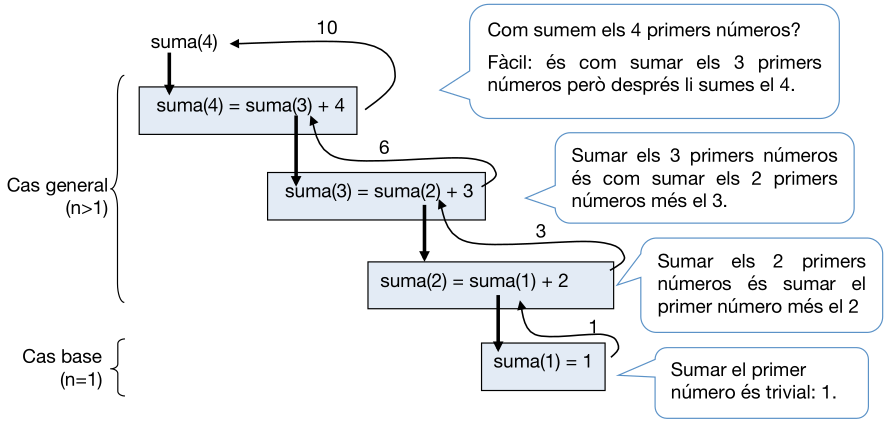
9.1. Implementació
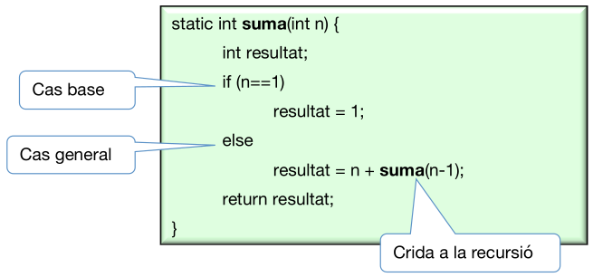
Dins d'una funció recursiva trobem 2 parts.
- Cas general: es torna a cridar a la funció, amb valors de paràmetres més menuts.
- Cas base: no es torna a cridar a la funció. El cas o casos base són situacions que es poden resoldre amb molta facilitat.
9.2. Funcionament
El programa principal (main) crida a la funció recursiva, on, generalment, s’executa el cas general. Este cas consistix en cridar altra volta a la mateixa funció, on es torna a executar el cas general i així successivament fins que arriba un punt en què s’executa el cas base. En eixe moment acaba la recursió i el flux de control "va tornant per on havia vingut". Açò últim queda reflectit en les fletxes verdes de l'esquema que vorem a continuació.
Per a entendre millor el funcionament, hem d'imaginar-nos que, cada vegada que es fa una crida a la recursió, és com si es cridara a un "clon de la funció", amb els seus paràmetres i variables locals que no tenen res a vore amb els de "l'altre clon".
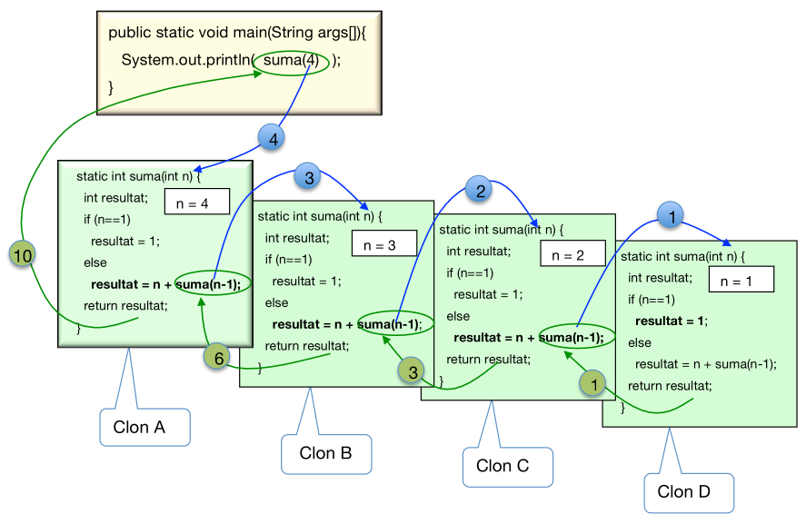
La recursió va (fletxes blaves):
Quan fem la crida a suma(4), s'executa la funció, que li direm clon A. Esta fa una crida a suma(3) i s'executa B. Esta fa una crida a sumar(2) i s'executa C. Esta fa una crida a suma(1) i s'executa D. Esta arriba al cas base i ja no crida a ningú.
...i la recursió torna (fletxes verdes):
La funció D acaba i retorna el valor 1 a qui l'havia cridat, que era el clon C, qui continua executant-se per on ho havia deixat. El clon C fa uns càlculs i retorna un 3 al clon B. Este fa uns càlculs i retorna un 6 al clon A. I este fa uns càlculs i retorna un 10 al main, qui havia iniciat la crida.
9.3. Com vore si la recursió està ben feta
Per a vore que és correcte l'algorisme recursiu, hem de vore almenys:
- Existix al menys un cas base
- El paràmetre de la crida a la recursió de dins de la funció és cada volta "més menut" (va acostant-se al cas base).
- Finalment la crida recursiva acaba passant per algun cas base.
9.4. Recursivitat vs Iteració
Com hem de resoldre un problema determinat? De forma iterativa o recursiva? Per a saber-ho, veiem els inconvenients i avantatges de la recursió:
Inconvenients:
- La funció recursiva usa més RAM ja que per a cada clon reserva nova memòria per als seus paràmetres i variables locals.
- La funció recursiva tarda més en executar-se ja que fa moltes crides a funcions i ha de reservar memòria per a les variables dels clons.
Avantatges
- A vegades, la solució recursiva és molt més fàcil de trobar que la iterativa. Fins i tot, en ocasions és l'única alternativa.
9.5. Exemples d'ús de recursió
- Càlcul del factorial d'un número.
- Destapar les caselles en el joc del buscamines.
- Buscar la solució a un laberint.
- Trobar la ruta òptima entre 2 pobles.
- Mostrar els fitxers que hi ha en un arbre de direccions i subdirectoris.
Exercici 25. Recursió. RESOLT
Fes una funció que calcules el factorial d'un número de forma iterativa i altra funció que el calcule de forma recursiva. Suposem que mai es crida a la funció amb un número negatiu.
Exercici 26. RESOLT
Fes el procediment recursiu anomenat mostraBinari, que reba un número enter (en el sistema decimal) i mostre el corresponent número en binari. Després fes la funció recursiva calculaBinari que, en compte de mostrar el número en binari, retorne una cadena amb eixe binari.
Exercici 27. RESOLT
Procediment recursiu anomenat mostraInvers, que mostre en pantalla els dígits d'un número enter positiu en ordre invers.
Exemple de crida: mostraInvers(3478) --> 8743
9.5.1. Exercicis de recursió
Exercici 28
Observa el següent procediment recursiu. Quin és el cas base? Quin és el cas general? Sense executar-lo, intenta vore què mostrarà per pantalla si l'invoquem amb hola(4).
Exercici 29
Calcula la potència de forma recursiva:
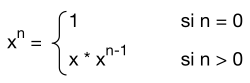
Exercici 30
Funció recursiva que calcule un número de la sèrie Fibonacci:
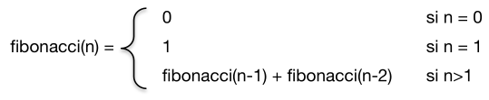
Exercici 31
Funció recursiva anomenada palindrom que retorne un booleà que indique si la cadena passada com a paràmetre és un palíndrom o no (si es llig igual d'asquerra a dreta que de dreta a esquerra). Exemples (sense tindre en compte accents ni espais ni majúscules):
- Senén té sis nens i set nenes
- Adán no cede con Eva y Yavé no cede con nada
- Sé verla al revés
- Dábale arroz a la zorra el abad
- Anita lava la tina
- La ruta nos aportó otro paso natural
NOTA: Intenta millorar la funció, de forma que no faça cas dels possibles espais de la frase. Usa el mètode replace dels String de Java per a "canviar" els espais per res.